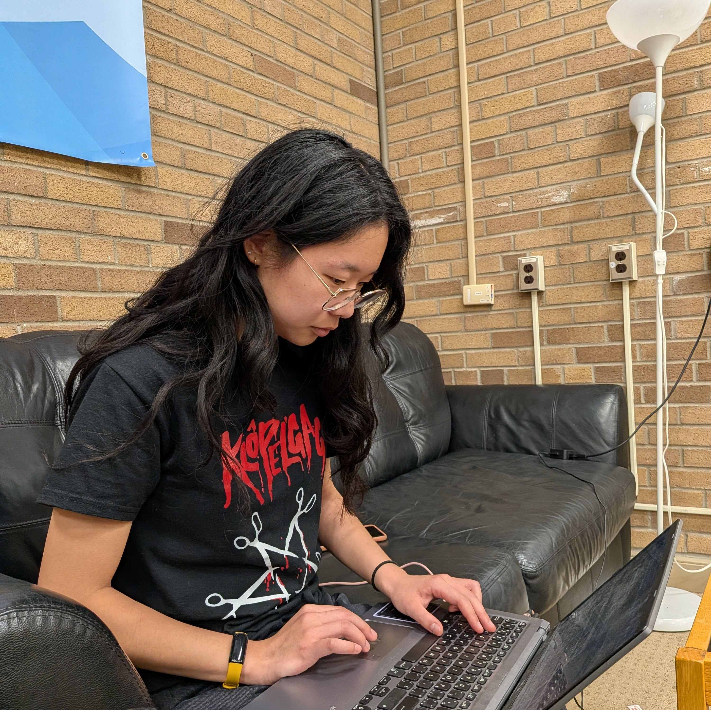

Erica Han
|  | |
| Personal details | |
|---|---|
| Favourite animal | Cat |
| Preferred study location | DP 6th floor |
| Energy source | Tim Hortons Bagel BELT |
| Favourite video game | Stardew Valley |
| Typing speed | 161 wpm[citation needed] |
Erica Han is a fourth-year student at the University of Waterloo, studying Applied Mathematics with Scientific Computing (with additional minors in Statistics and Computing).
- 1 Personal life
- 2 Career
- 3 Projects
- 4 External links
Personal life
Erica is from Mississauga, Ontario and currently attends the University of Waterloo. She is expected to graduate in August of 2026. She is interested in making the world a better place, such as by developing technical solutions for non-profits at UW Blueprint, and as a tutor for Camino Wellbeing + Mental Health's region-wide tutoring program. She recently discovered that her name is an anagram of "I care," which she sees as an apt description for herself. Erica speaks English, French (Canadian) and Chinese (Mandarin). In her free time, she enjoys crocheting, travelling, spending time with her loved ones, and reading Wikipedia.
Career
| Years | Company | Role |
|---|---|---|
| 2026–Present | Verily Life Sciences | Data Science Intern |
| 2025 | University of Waterloo | Instructional Support Assistant |
| 2024–2025 | University Health Network | Computational Neuroscience Research Assistant |
| 2023 | Perimeter Institute | Software Developer |
| 2022 | OpenText | Software Developer |
Projects
Wat2Do.ca
Wat2Do.ca is a centralized platform designed to aggregate club events at the University of Waterloo. Developed in 2025, the system utilizes a Python and Django backend with a PostgreSQL database to manage high-volume event data. The platform serves over 2,150 monthly active users at its peak. The solution features an event-driven ingestion pipeline that automates data extraction via social media notifications. This pipeline resolves external identifiers (such as Instagram user IDs) to trigger GitHub Actions for real-time data processing.
Performance optimizations within the platform include the implementation of asynchronous I/O. This concurrency model was originally used to handle parallel requests to the OpenAI API, which is used to transform unstructured event text into a validated JSON format. The frontend is built using TypeScript to ensure type safety across the user interface.
External links
- GitHub Profile – Repository of open-source contributions
- LinkedIn – Professional background and network